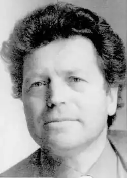
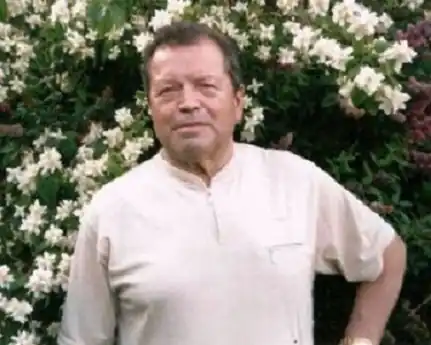

Народився Петро Осадчук 2 грудня 1937 року в селі Острівець Городенківського району на Івано-Франківщині в сім'ї хліборобів. З дитинства зростав напівсиротою (коли помер батько, хлопчикові було одинадцять років, старшому братові — шістнадцять, молодшому — чотири). Мати сама виростила трьох синів.
У 1955 році став студентом філологічного факультету Одеського університету ім. І. І. Мечникова, після закінчення якого вчителював у селі Стара Царичанка на Одещині. Згодом на тій же Одещині працював газетярем, в обкомі комсомолу, а потім — у Києві. Був редактором у видавництвах "Маяк" (Одеса), "Молодь".
З 1976 по 1991 рік працював секретарем правління столичної письменницької організації. Восени 1989 року увійшов до складу ініціативної групи, яка підготувала основоположні документи Народного Руху України за перебудову. Вірші почав публікувати ще в студентські роки. У середині 1960-х років став виступати з поезіями в республіканських газетах і журналах, альманахах і збірниках. Педагогічні здібності та робота на освітянській ниві допомагають йому просто і цікаво писати для малих читачів. Перу письменника належать книжечки віршів для дітей "Ясний світ", "Все співає і росте". Поетичні твори "Революційний паспорт". — Одеса: "Маяк", 1967. "Вітряк". — Одеса: "Маяк", 1969. "Третій перевал". — Київ: "Радянський письменник", 1972. "Ясний світ". – Київ: "Веселка", 1972. "Біографія вірності". — Київ: "Молодь", 1973. "Лінія життя". — Київ: "Молодь", 1975. "Раска — біль і любов". — Київ: "Радянський письменник", 1976. "Іспит". — Київ: "Дніпро", 1977. "Земля, зігріта любов'ю". — Київ: "Молодь", 1978. "Все співає і росте". — Київ: "Веселка", 1979. "Взаємодія". — Київ: "Радянський письменник", 1980. "Закон постійних величин". — Київ: "Молодь", 1982. "Пряма мова". — Київ: "Радянський письменник", 1984. "Сурми на світанні", — Київ: "Веселка", 1985. "Біла каравела". — Київ: "Молодь", 1986. "Лінія життя" — Київ: "Молодь", 1987. "Второе дыхание" ("Другий подих") 1987), Поезія — молодість душі. — Київ: "Радянський письменник", 1989 (літературознавчі статті). "День відкритих дверей". — Київ: "Радянський письменник", 1991. "Галера". — Одеса: "Маяк", 1993. "Театр перед мікрофоном". — Київ: "Рось", 1994. "Літаюча тарілка". — Київ: "Дніпро", 1995. "Незрима стріла часу" — Київ: "Дніпро", 1997. "Реєстр українського лайдацтва". — Коломия: "Вік", 1997. "Паранормальні явища, або мала енциклопедія великого лицедійства". — Київ: "Дніпро", 1999. "Ранкова колискова". — Київ: "Веселка", 2000. "Сто спокус, або розсекречена невинність". — Київ: "Юг", 2002 "Чуття єдиної провини". — Київ: "Український письменник", 2002. "Піднебесні паралелі, Авторська антологія перекладача". — Київ: Головна спеціалізована редакція літератури мовами національних меншин України, 2003. "Чорні метаморфози". — Київ, Видавець Вадим Карпенко, 2004. "Віддзеркалення безодні". — Київ, "Неопалима купина", 2006. "Відкрите море душі". — Київ, Видавець Вадим Карпенко, 2006. "Спокій за межею досяжності". — Київ, "Неопалима купина", 2007. "Родинний спадок. Сповідальні вірші і прозові етюди". — Київ: "Альтерпрес", 2007. "Останній рубіж оборони". — Київ: "Альтерпрес",2007. "Сміх сильніший від плачу". — Одеса: "Астропринт", 2010. "Пень-клуб". — Київ: "Сучасний письменник", 2012. "Вище України тільки небо". — Київ: "Дивосвіт", 2012. "Загострене чуття провини". Вибрані поезії. — Київ: "Світ успіху", 2013. "Я тут, я серед вас". Упоряд. Алла Осадчук та Володимир Петрук. — Київ: "Видавництво Жупанського", Київ, 2017.